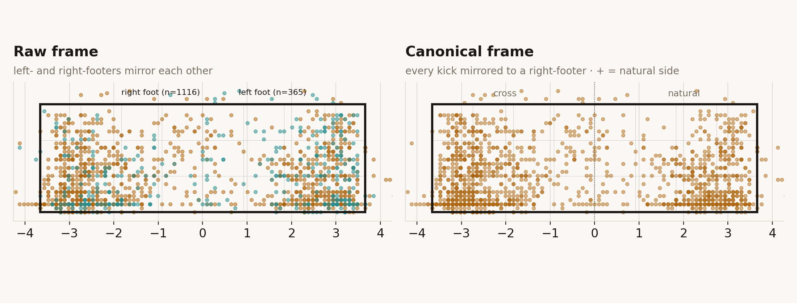
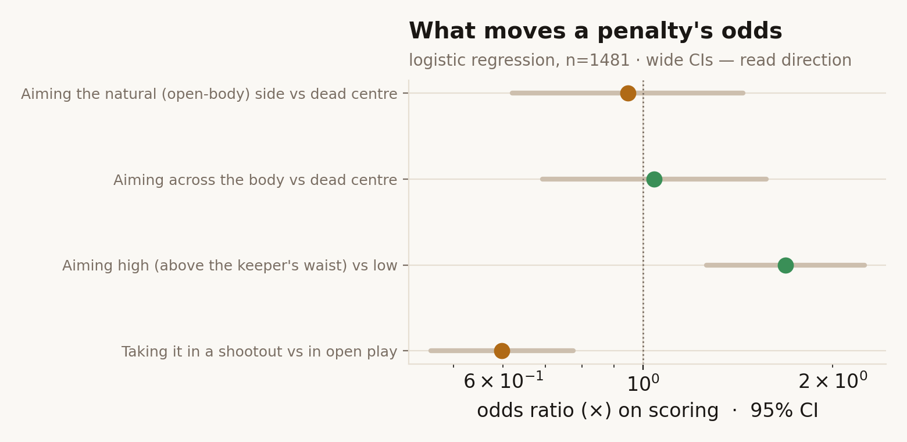

The data, and how small it really is
Everything here is precomputed in Python from StatsBomb's open data and shipped to your browser as one static JSON bundle — the page only renders. I pulled every penalty I could find: — kicks in total across — competitions, of which — were shootout kicks and — came from a men's or women's World Cup.
That is a tiny sample by data-science standards, and pretending otherwise is the quickest way to lose a reader who knows football. So the rule throughout is: report N next to every cut, show a confidence interval or hedge, and never split a small number three more ways without saying so. The title says "World Cups"; the honest subtitle is "World Cups, and everywhere else StatsBomb has opened up," because the World-Cup-only sample alone is too thin for most of these tests.
The geometric core: mirroring
StatsBomb records where each shot crosses the goal line as a (y, z) point on the goal plane. The goal mouth sits between y = 36 and y = 44 (8 units = 7.32 m) with the crossbar near z = 2.67 (2.44 m). I rescale that to a canonical 7.32 m × 2.44 m goal in metres, centred on the goal line.
Then the important step. A right-footed striker's natural side-foot placement goes to the keeper's right; a left-footer's mirror-images to the keeper's left. If you pool both feet raw, "natural side" and "across the body" cancel into mush. So I mirror every left-footed kick about the goal centre onto a canonical right-footer frame: after mirroring, + always means the open-body natural side and − the across-body side. Every aggregate, KDE and strategy test below runs in that mirrored frame.

Keeper dive direction is not in the data — so I inferred it, badly, on purpose
This is the part most penalty write-ups quietly fake. StatsBomb has no "dive direction" column. The only honest signal is contact: when a keeper saves or parries, they reached the ball, so the dive went to the ball's zone. When a keeper is beaten, the event is a clean "No Touch" goal — indistinguishable from a keeper who guessed wrong. A keeper who dives the right way and is beaten by a perfect penalty looks identical, in the data, to one who dived the opposite way.
So dive direction is recoverable for only about — of kicks — the ones that produced a save — and that slice is biased toward shots hit near the keeper. I keep the inference, label its coverage everywhere, and treat the rest as an explicit unknown bucket. The limitation is the finding (Act 2): anyone quoting a clean keeper-dive frequency from open data is inventing it.
Inference rules. R1 — keeper makes contact (save / parry / punch / smother) ⇒ dive = keeper-perspective zone of the shot placement (high confidence). R2 — goal with no touch, or a shot that misses the target ⇒ dive direction unknown. Failure cases: central saves made standing read as "centre" even if the keeper committed early; deflections off a trailing wrong-way hand still count as contact; rebound double-saves and goal-line scrambles.
Is anyone playing Nash?
The textbook treatment (Chiappori, Groseclose & Levitt 2002; Palacios-Huerta 2003) needs the keeper's dive on every kick to fill a shooter × keeper payoff matrix. Open data doesn't give me that. But it gives me the half that carries the theory's central prediction: at a mixed-strategy equilibrium, every strategy a player actually uses must return the same expected payoff. For the taker, the expected payoff of a placement zone — marginalised over whatever keepers do — is simply its observed conversion rate.
So I test whether conversion is equal across the placement zones takers actually use (a chi-square on scored × zone), report Wilson 95% CIs per zone, and quantify any gap in percentage points. Equal ⇒ consistent with equilibrium (and I print that null proudly). Unequal ⇒ an under-used, high-converting zone left on the table. For teaching I also solve the classic 2×2 natural/cross game with the literature's canonical payoffs and show its mixed equilibrium — clearly separated from what my data measures.
The conversion model (interpretable on purpose)
A single logistic regression on scoring, read back as odds ratios in plain English — not an XGBoost moment. Predictors: placement zone (natural / cross vs centre), height (high vs low), and shootout vs open play. With this little data the coefficients carry wide CIs, so I report direction, not decimals.

Survival, and a confound I won't hide
For shootouts I reconstruct each sequence, assign every kick its taker's order number, and compute per-kick conversion with Wilson CIs, plus a Kaplan–Meier curve of "team survival" by kick number. The confound, stated up front: kick order is chosen by the manager — best takers often go first, or are held back for the decisive fifth — so any order effect is entangled with taker quality and game state. I report the pattern; I do not claim the fifth kick makes you choke.
Honest negatives
- The keeper-dive distribution is unmeasurable from open data beyond the saved slice. That's a null I lead with, not one I bury.
- The equilibrium test may fail to reject simply because N is small — "consistent with equilibrium" here can mean "too little data to catch the gap," and I say so beside the p-value.
- The famous-penalty P(goal) in the cold open is the interpretable model's view of a zone, not a claim about that specific strike's physics.
From prototype to production
A real version of this would ingest the proprietary StatsBomb feed (which does hand-tag keeper movement), pool several thousand kicks, add taker- and keeper-fixed effects to separate skill from strategy, and recompute the equilibrium per footedness and per competition. None of that changes the method on display here — it just buys the sample size to make the CIs narrow enough to coach on.
Methods note — the short version, and the long one
For the fan: I took every penalty in the open dataset, flipped the lefties so all kicks look right-footed, drew heatmaps of where the ball goes, worked out the few cases where you can tell which way the keeper dived, checked whether shooters are leaving easy goals on the table, and measured whether the fifth kick is really scarier than the first. Where the data can't answer, I say so.
For the technical reader: mirroring convention and goal-plane rescaling in 02_geometry.py; Gaussian-KDE placement grids per (foot × phase × outcome) cut; dive inference rules and coverage in 03_keeper.py; the equilibrium equal-success chi-square and the cited 2×2 Nash solve in 04_game_theory.py; the logit and its odds-ratio glosses in 05_models.py; shootout reconstruction, per-kick Wilson CIs and the Kaplan–Meier fit in 06_survival.py. Full pipeline and notebook in the repo.